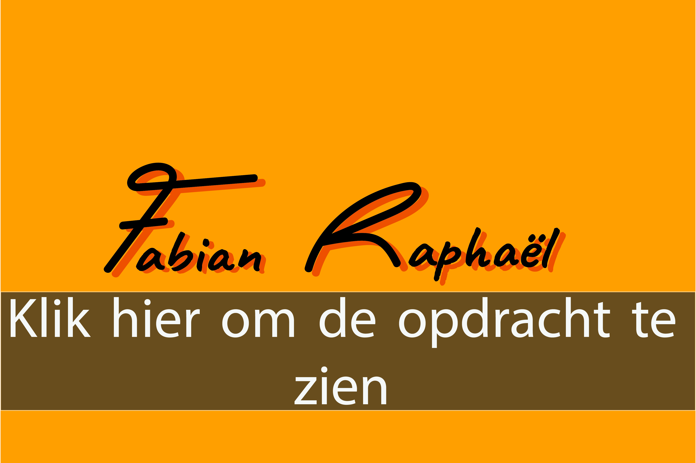
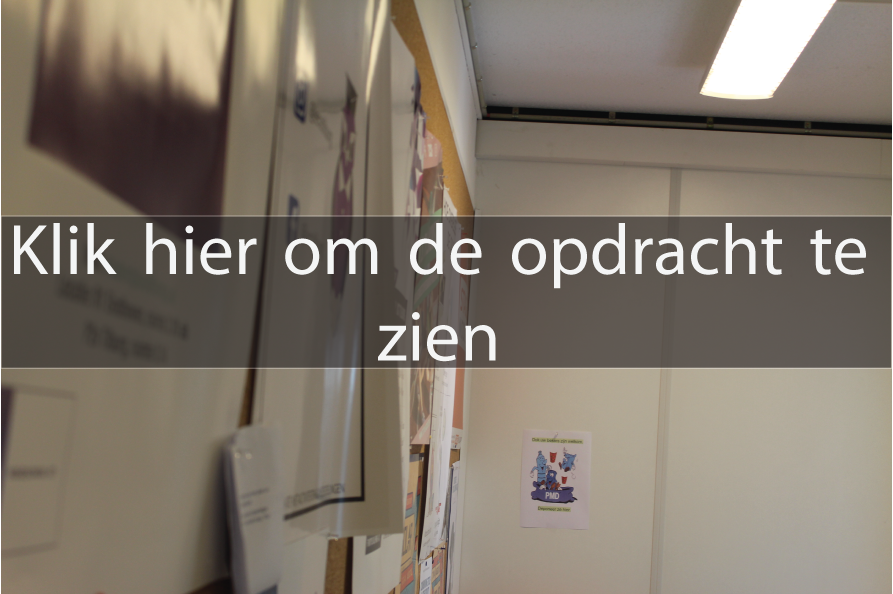

Reflectie: Brand Style Guide Het was erg interessant om ze zien hoe andere bedrijven hun Brand Guide hadden gemaakt omdat ik een beter idee kreeg hoe professionals de taak van Brand Guide creëren zou aanpakken. Het maken van de Brand Guide zelf was helemaal niet ingewikkeld na meerdere voorbeelden te hebben gezien en heel erg handig. Het maken van nieuwe producten is veel makkelijker nu dat ik een beter idee heb van de algemene style.
Reflectie: We hebben logo's gemaakt voor Fabian in deze opdracht. Nadat ik feedback had gekregen van mijn eerste iteratie heb ik de goude kleuren weggehaald. Tijdens het maken van deze opdracht heb ik niet alleen meer geleerd over logo's maar ook over Illustrator. Ik kan nu een stuk beter overweg met Illustrator en heb meer ervaring met logo's ontwerpen. Ook was het erg leuk om verder te gaan met dit onderwerp tijdens de Proftaak en zo een mooi einproduct te ontwerpen waar Fabian zichzelf ook in ziet.
Reflectie: Bij deze opdracht heb ik meerdere poster gemaakt voor Fabian. Ik heb geprobeerd te spelen met meerdere kanten van Fabian zo komt hij vriendelijker over in sommige posters en juist wat verdrietiger/cooler in andere posters. Ik ben nog verder gegaan met compositie en heb veel inspiratie gehaalt van andere artiesten die dezelfde kernwaardes hebben als Fabian. Haran heeft me de tip gegeven om ook andere inspiratie te zoeken.

Reflectie: Het was leuk om verder te kunnen gaan met typografie omdat ik hier al wat ervaring mee had, dat heeft me erg veel geholpen. De Brand Guide heeft me ook erg veel geholpen. Ik ken Fabian en het beeld die we willen geven bij hem al een stuk beter waardoor het minder moeilijk was om passende magazine pagina's te ontwerpen.